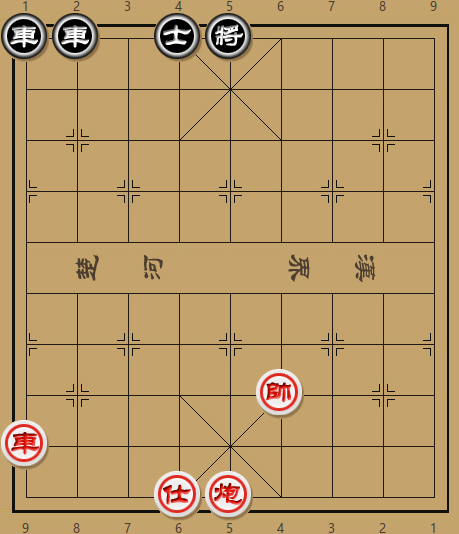

One minute
排局-02

rr1ak4/9/9/9/9/9/9/5K3/R8/3AC4 w
如图，双方子力不多，且黑方双车通头，红方怎样才能借先行之利取胜？
初看之下，红方虽有空头炮，但黑方双车相连，抽将也得不到便宜。且边线双车对头，所以红方第一步究竟要不要打将就是值得思索的问题。如果打将，黑方必定士4进5，等红车再次打将离开中路，黑方可以有针对性的支士落士，红方难以进取。但若是不打将，则只有平车躲避，此时黑方可以进车打将，似乎很快可以化解红方尚不成熟的攻势。
当然，红方还是可以先车九平三叫杀（伏士六进五，士4进5，车三进八杀）。此时黑方并不能打将抽车，因为车2进7，帅四退一，车2进1? 士六进五，反将红胜。简单上将并不能解杀：
- 车九平三 将５进１
- 车三平五 将５平４
- 车五平六 将４平５
- 仕六进五 红胜
所以将5进1的走法是错误的。那黑方怎样才能化解红方攻势呢？看来只有先车2进7打将，红方必定帅四退一躲避。此时再将5进1，红方没法平车打将，是不是可以守住呢？非也，此时红方可以从竖线进攻：
- 车九平三 车２进７
- 帅四退一 将５进１
- 车三进七 将５进１
- 仕六进五 将５平４
- 车三退二 红胜定
可惜，红方的胜利是建立在黑方的失误之上，当然正解也绝非寻常着法：
- 车九平三 车２进７
- 帅四退一 车１进９
黑方一手车1进9（亦可车2进2），明为送，实为捉，红方不能炮五平九，否则车2进1抽车黑速胜。因炮被牵制，士六进五也不成，所以红方只能车三进八借打将之机先吃一车。
- 车三进八 将５进１
- 炮五平九
此时红方不仅净多一炮，且底车先捉黑士，怎么看黑方也是败势难逃。但黑方自有妙计：
- …… 车２进１
- 帅四进一 车２进１
黑方车2进1打将，迫使红帅定位。红方如果帅四退一下帅，黑方则车2进1捉双，随后车2平4吃士，然后车4平5占中成单车守和车炮之势。红方不肯，只好帅上三楼。黑方随即再度进车捉双。为什么黑方不直接车2进2捉双呢？这里按下不表，稍后揭晓。
- 炮九进九 车２平４
- 车三平五 将５平４
Read other posts